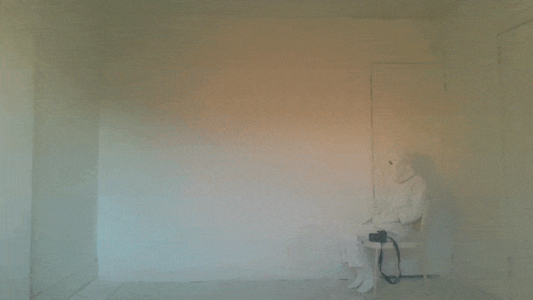

A figure in a suit made of gessoed canvas sits in front of a wall made of the same material. The scene is a blank slate ready for a painting to be made on, which is perhaps created by the lighting's changing colors. In this blank canvas, hints of a person's life are present in an eye socket cut from the figure's mask and the shape of the room's door closed behind them. Otherwise, the person is as motionless as their setting, creating an unsettling ambiguity about their personhood and a sensation of being unwillingly watched from their camoflauge. The scene feels somewhere out of time and place, but the hazy sunset might further hint at falling asleep, and the simplicity at the dissociation of being only half lucid.
This piece was ultimatley about the dissociation and emptiness I felt when my daydreaming was at it's worst
during quarantine. I would spend all my waking time laying and staring at the walls or the cieling,
without any connection to anything real or any substantial ability to move.
Because my circadian rhythm fell out of 24-hour sync, the sun had no more connection to
meaning "today" or "tommorow".
The title is based off a piece that was referenced to me in a crit–
24 Hour Psycho by Douglas Gordon,
which I'll quote a description of here:
"Realistically, no one can watch the whole of 24 Hour Psycho, which consists of Alfred Hitchcock’s film Psycho (1960)
slowed down so that a single, continuous viewing lasts for twenty-four hours. While we can experience narrative elements in it
(largely through familiarity with the original), the crushing slowness of their unfolding constantly undercuts our expectations,
even as it ratchets up the idea of suspense to a level approaching absurdity." *
* Ferguson, Russell. "Trust Me." From Douglas Gordon, Cambridge/MA, 2001, p. 16.
I like refferencing this work because it adds the idea of suspense, horror, and a slow doom to my project– all of which I would say are accurate to the personal experience I'm attempting to describe. In an ideal reworking of my piece I would run the camera for 24 hours and pose for the duration in which I was visible in the lighting, then would have the playback loop at midnight. I would remove the black camera visible in frame, but I'm undecided if I would change anything about the figure or the layout of the room.
